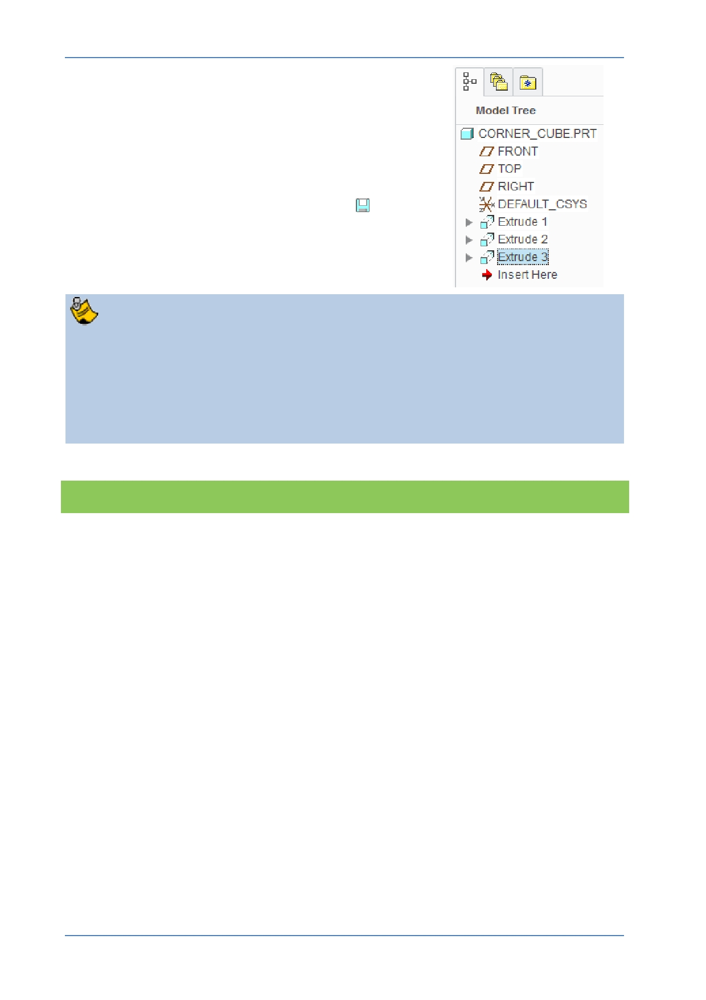

PTC Academic Program
The new Extrude feature is added to the bottom of
the model tree.
11. Saving your work:
In the Quick Access toolbar, click Save
.
Accepting default names for features is fine for simple models like this. Complex
models can have hundreds of features making it difficult to find a particular
feature in the model tree to make edits.
It’ s good practice to give key features recognizable names. Features can be
renamed when they are being created or by clicking twice on the text in the
model tree, making sure to pause between clicks.
What have you learned?
Default orientation.
Renaming feature names.
References, specifying references on-the-fly while sketching geometry.
Sketcher – Internal sketch, center and point circle and dimension.
Extrude – internal sketch, remove material, changing direction and intersect with
all surfaces.
Saving the model.
© 2012 PTC
Creo Parametric 2.0 Primer
Page 33